<footer class="docs-footer light-colors" style="background-color: #3f51b5">
  <div class="docs-footer-list">
    <div class="footer-logo">
      <a href="https://linkedin.com/in/samuelmarks">
        
      </a>

      <a href="https://offscale.io" style="margin-left: 10px; margin-right: 10px;">
        
      </a>
      <a href="https://github.com/SamuelMarks">
        
      </a>
    </div>

    <div class="docs-footer-copyright">
      <p>&copy; 2017&ndash;2022. Code and documentation licensed under (Apache-2.0 OR MIT OR CC0).</p>
    </div>
  </div>
</footer>
